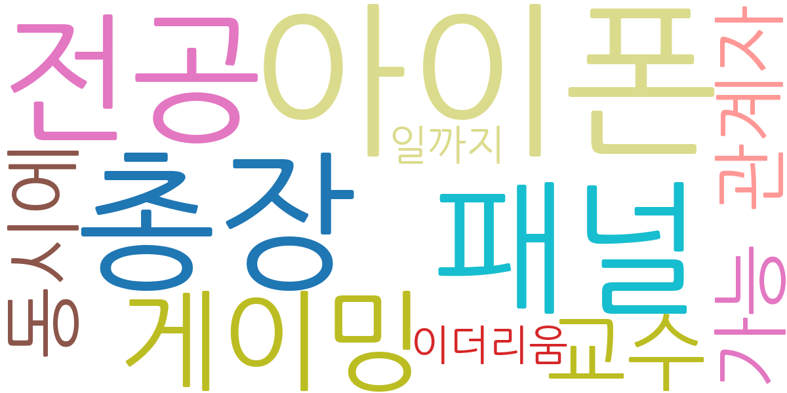
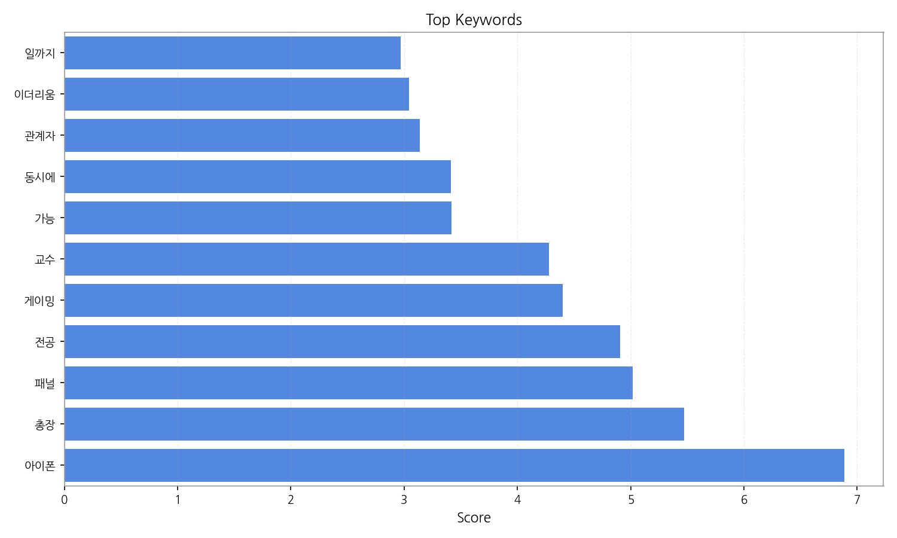
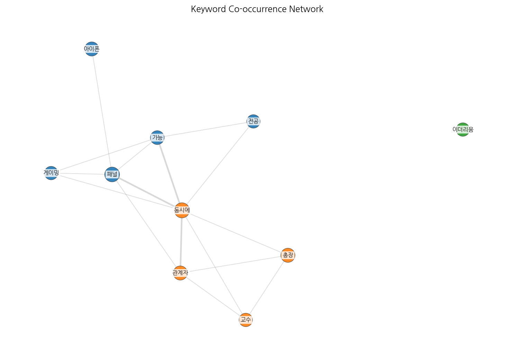
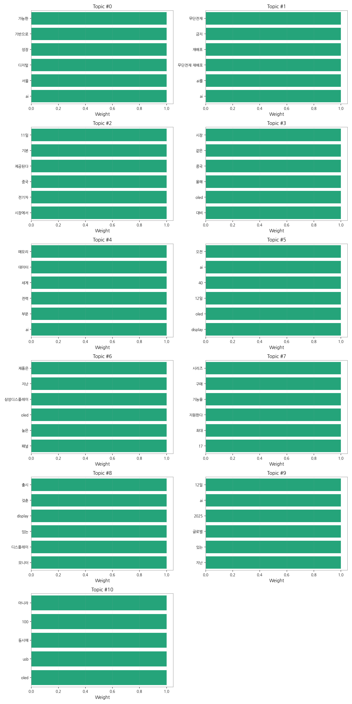
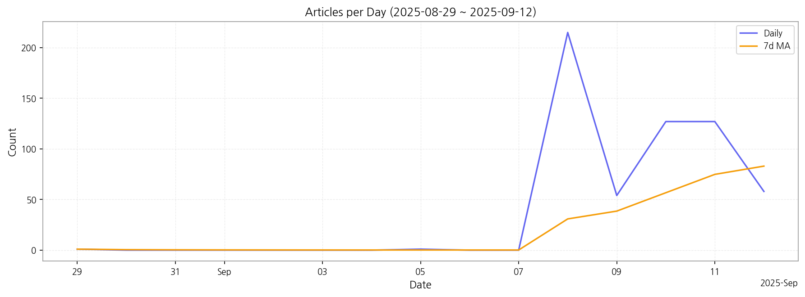

이번 기간 핵심 토픽과 키워드, 주요 시사점을 요약합니다.
핵심 맥락: 데이터는 AI 기술 발전과 디스플레이 산업, 특히 OLED 시장의 성장 및 중국 시장과의 경쟁에 대한 뉴스 기사를 주로 다루고 있습니다. AI는 다양한 분야(전력, 메모리, 모니터 등)에서 활용되고 있으며, 전기차 시장의 성장과 함께 언급되고 있습니다. 결론적으로, 첨단 기술 발전과 관련 산업의 경쟁 심화를 보여주는 뉴스들이 주를 이룹니다.
최근 변화/스파이크: 2025년 9월 8일 기사 수가 급증(215건)한 것을 볼 수 있습니다. 이는 특정 기술 발표나 시장 상황 변화 등 외부 요인에 의한 것으로 추정되며, 이후 며칠 동안 기사 수는 감소 추세를 보이고 있습니다.
실무 인사이트:
9월 8일 뉴스 분석: 2025년 9월 8일 급증한 기사들을 면밀히 분석하여, 당시 발생했던 주요 이벤트(예: 신제품 발표, 기술 발전, 시장 변화 등)를 파악하고, 향후 시장 전략에 반영합니다. 특히, AI와 OLED 관련 뉴스에 집중하여 경쟁사 동향 및 기술 트렌드를 분석합니다.

| Rank | Keyword | Score |
|---|---|---|
| 1 | 아이폰 | 6.888 |
| 2 | 총장 | 5.472 |
| 3 | 패널 | 5.020 |
| 4 | 전공 | 4.905 |
| 5 | 게이밍 | 4.402 |
| 6 | 교수 | 4.281 |
| 7 | 가능 | 3.416 |
| 8 | 동시에 | 3.411 |
| 9 | 관계자 | 3.138 |
| 10 | 이더리움 | 3.043 |
| 11 | 일까지 | 2.968 |




핵심 맥락: 데이터는 AI 기술 발전과 디스플레이 산업, 특히 OLED 시장의 성장 및 중국 시장과의 경쟁에 대한 뉴스 기사를 주로 다루고 있습니다. AI는 다양한 분야(전력, 메모리, 모니터 등)에서 활용되고 있으며, 전기차 시장의 성장과 함께 언급되고 있습니다. 결론적으로, 첨단 기술 발전과 관련 산업의 경쟁 심화를 보여주는 뉴스들이 주를 이룹니다.
최근 변화/스파이크: 2025년 9월 8일 기사 수가 급증(215건)한 것을 볼 수 있습니다. 이는 특정 기술 발표나 시장 상황 변화 등 외부 요인에 의한 것으로 추정되며, 이후 며칠 동안 기사 수는 감소 추세를 보이고 있습니다.
실무 인사이트:
9월 8일 뉴스 분석: 2025년 9월 8일 급증한 기사들을 면밀히 분석하여, 당시 발생했던 주요 이벤트(예: 신제품 발표, 기술 발전, 시장 변화 등)를 파악하고, 향후 시장 전략에 반영합니다. 특히, AI와 OLED 관련 뉴스에 집중하여 경쟁사 동향 및 기술 트렌드를 분석합니다.
| Idea | Target | Value Prop | Score |
|---|---|---|---|
| OLED 패널 생산 효율 증대 AI 플랫폼 (KR) | 한국 내 대기업 OLED 패널 제조사, 생산 관리 부서, 품질 관리 부서 | AI 기반 예측 모델을 통해 불량률을 최소화하고 생산 효율을 극대화합니다. 실시간 데이터 분석으로 문제 발생 시 신속한 대응이 가능하며, 숙련된 인력의 부족을 AI로 보완하여 생산성을 향상시킵니다. 차별화 포인트는 실시간 예측 및 문제 해결 기능을 통한 생산 라인의 지능화입니다. | 4.50 |
| 모빌리티 디스플레이 시장 분석 및 예측 서비스 (KR) | 한국 내 자동차 부품 제조사, 디스플레이 제조사, 투자사 | 빅데이터 분석 및 AI 기반 예측 모델을 통해 모빌리티 디스플레이 시장의 미래를 예측하고, 경쟁사 분석 및 기술 트렌드 분석을 제공합니다. 시장 진출 전략 수립 및 투자 의사결정에 필요한 데이터 기반 인사이트를 제공합니다. 차별화 포인트는 모빌리티 디스플레이 시장에 특화된 예측 모델입니다. | 4.20 |
| AI 기반 사이니지 광고 플랫폼 (JP) | 일본 내 사이니지 운영 사업자, 광고 대행사, 대형 유통업체 | AI 기반으로 사이니지 광고 효과를 실시간으로 측정하고, 고객의 특성에 맞는 타겟팅 광고를 제공합니다. 광고 운영 관리를 자동화하여 관리 비용을 절감하고, 효율적인 광고 운영을 지원합니다. 차별화 포인트는 AI 기반의 실시간 효과 측정 및 타겟팅 기능입니다. | 4.00 |
| 전자 부품 조달 플랫폼 (EU) | EU 지역 전자 제품 제조업체, 구매 담당자, 조달 부서 | 다양한 전자 부품 공급업체의 정보를 통합 제공하여 원하는 부품을 효율적으로 조달할 수 있도록 지원합니다. AI 기반 가격 비교 및 협상 지원으로 비용을 절감하고, 공급망 관리 시스템을 통해 부품 품질 및 리스크를 관리합니다. 차별화 포인트는 AI 기반 가격 협상 지원 및 공급망 관리 기능입니다. | 3.80 |
| 아이폰 | 기업(B2B) | 아이폰 도입으로 비용/품질/경험을 개선. | 3.00 |